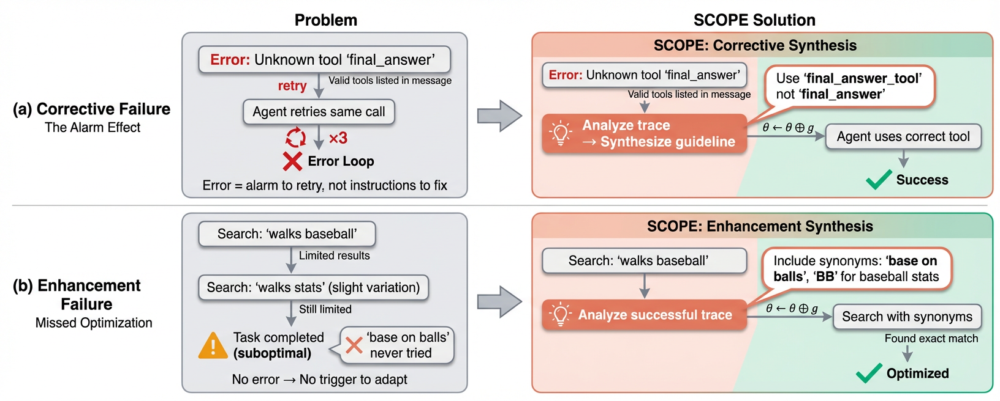
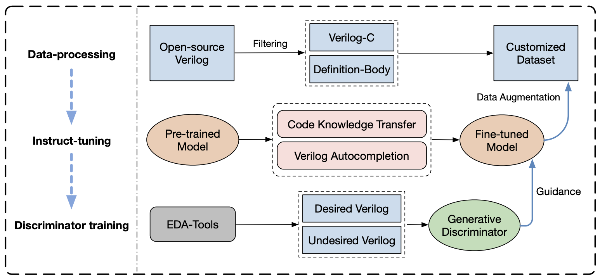
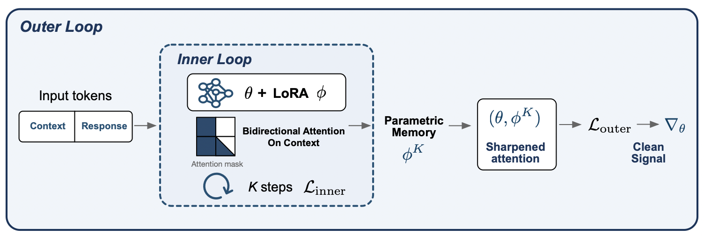
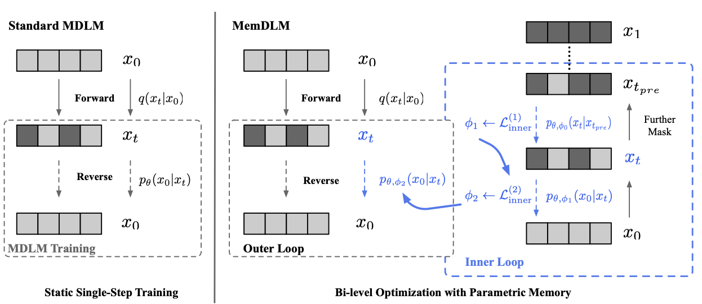
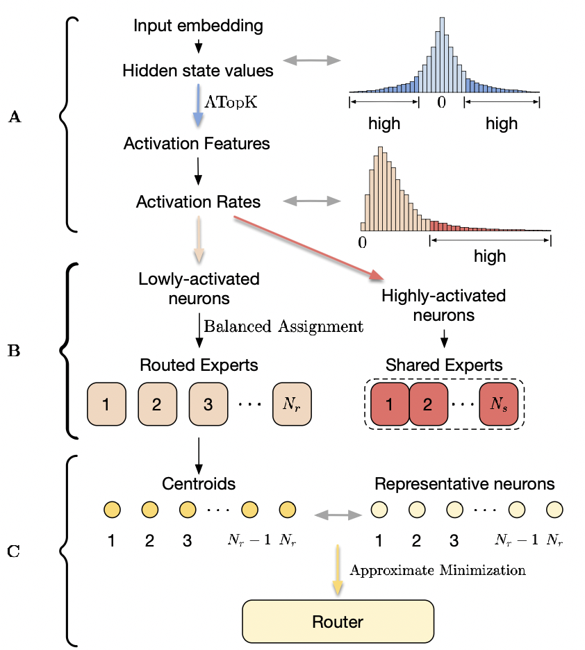
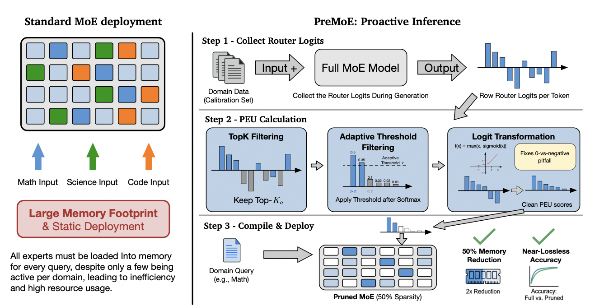
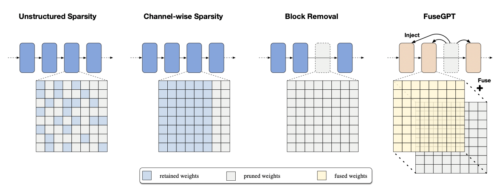
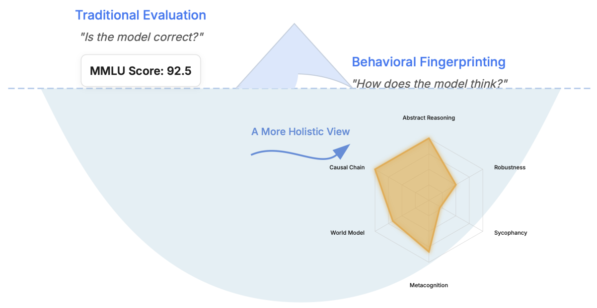

BiographyI am a third-year Ph.D. candidate in the Department of Computer Science and Engineering at The Chinese University of Hong Kong, supervised by Prof. Bei Yu and co-supervised by Prof. Sinno Jialin Pan. My research focuses on large language models, especially LLM agents, long-context fine-tuning, efficient LLM adaptation, and model compression. My recent work studies how to improve LLM capability, efficiency, and reliability across agentic systems, code generation, and resource-constrained deployment. I received my B.S. degree in Mathematics from The Chinese University of Hong Kong in 2022. I am currently a research intern at Huawei Noah's Ark Lab / Foundation Model Department, working on long-context LLM fine-tuning, LLM agents, and efficient MoE deployment. I welcome discussions and collaborations with researchers and practitioners interested in LLM agents, long-context learning, efficient LLMs, and AI for code. Recent News
Research InterestsMy research interests include:
Selected Research DirectionsLLMs, Agents, and Long-Context LearningModern LLM systems are increasingly agentic and context-heavy. My work in this direction studies how models and agents can learn to use context, rather than merely receive longer inputs.   BetterV: Controlled Verilog Generation with Discriminative Guidance. ICML 2024. (Paper) Presents controllable Verilog generation for EDA optimization through discriminative guidance. Keywords: controllable code generation; Verilog; EDA optimization.  FocuSFT: Bilevel Optimization for Dilution-Aware Long-Context Fine-Tuning. arXiv preprint, 2026. (Paper) (Code) Identifies training-time attention dilution as an overlooked bottleneck in long-context SFT and introduces bilevel parametric memory to sharpen context utilization. Keywords: long-context fine-tuning; attention dilution; parametric memory.  Efficient LLMs and Model CompressionEfficient LLM deployment requires more than making models smaller. My work explores how to preserve or reorganize model capacity through sparsity, expert routing, and knowledge redistribution.    From Pruning to Grafting: Dynamic Knowledge Redistribution via Learnable Layer Fusion. arXiv preprint, 2024. (Paper) (Code) Reframes structured pruning as learnable knowledge grafting, recycling pruned transformer blocks instead of discarding them. Keywords: structured pruning; layer fusion; knowledge grafting. LLM Evaluation and AI for CodeBesides improving model capability and efficiency, I am interested in how LLMs behave in specialized, high-stakes workflows such as scientific evaluation and hardware/code generation.  See the full publication list and software page for more details. |